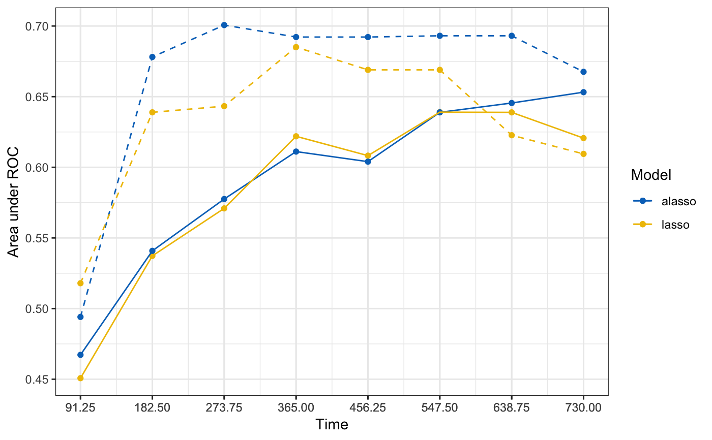
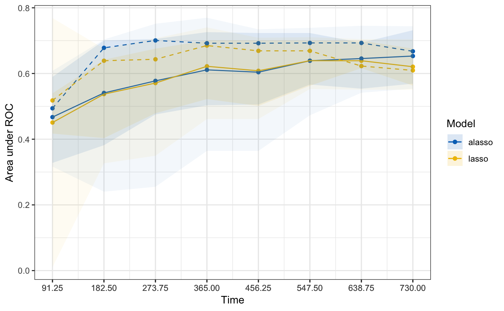

R/09-hdnom-compare-validate.R
hdnom.compare.validate.RdCompare High-Dimensional Cox Models by Model Validation
hdnom.compare.validate(x, time, event, model.type = c("lasso", "alasso", "flasso", "enet", "aenet", "mcp", "mnet", "scad", "snet"), method = c("bootstrap", "cv", "repeated.cv"), boot.times = NULL, nfolds = NULL, rep.times = NULL, tauc.type = c("CD", "SZ", "UNO"), tauc.time, seed = 1001, trace = TRUE)
| x | Matrix of training data used for fitting the model; on which to run the validation. |
|---|---|
| time | Survival time.
Must be of the same length with the number of rows as |
| event | Status indicator, normally 0 = alive, 1 = dead.
Must be of the same length with the number of rows as |
| model.type | Model types to compare. Could be at least two
of |
| method | Validation method.
Could be |
| boot.times | Number of repetitions for bootstrap. |
| nfolds | Number of folds for cross-validation and repeated cross-validation. |
| rep.times | Number of repeated times for repeated cross-validation. |
| tauc.type | Type of time-dependent AUC.
Including |
| tauc.time | Numeric vector. Time points at which to evaluate the time-dependent AUC. |
| seed | A random seed for cross-validation fold division. |
| trace | Logical. Output the validation progress or not.
Default is |
Chambless, L. E. and G. Diao (2006). Estimation of time-dependent area under the ROC curve for long-term risk prediction. Statistics in Medicine 25, 3474--3486.
Song, X. and X.-H. Zhou (2008). A semiparametric approach for the covariate specific ROC curve with survival outcome. Statistica Sinica 18, 947--965.
Uno, H., T. Cai, L. Tian, and L. J. Wei (2007). Evaluating prediction rules for t-year survivors with censored regression models. Journal of the American Statistical Association 102, 527--537.
# Load imputed SMART data data(smart) x = as.matrix(smart[, -c(1, 2)])[1:1000, ] time = smart$TEVENT[1:1000] event = smart$EVENT[1:1000] # Compare lasso and adaptive lasso by 5-fold cross-validation cmp.val.cv = hdnom.compare.validate( x, time, event, model.type = c("lasso", "alasso"), method = "cv", nfolds = 5, tauc.type = "UNO", tauc.time = seq(0.25, 2, 0.25) * 365, seed = 1001)#> Starting model 1 : lasso #> Start fold 1 #> Start fold 2 #> Start fold 3 #> Start fold 4 #> Start fold 5 #> Starting model 2 : alasso #> Start fold 1 #> Start fold 2 #> Start fold 3 #> Start fold 4 #> Start fold 5print(cmp.val.cv)#> High-Dimensional Cox Model Validation Object #> Random seed: 1001 #> Validation method: k-fold cross-validation #> Cross-validation folds: 5 #> Model type: lasso #> glmnet model alpha: 1 #> glmnet model lambda: 0.03547314 #> glmnet model penalty factor: not specified #> Time-dependent AUC type: UNO #> Evaluation time points for tAUC: 91.25 182.5 273.75 365 456.25 547.5 638.75 730 #> #> High-Dimensional Cox Model Validation Object #> Random seed: 1001 #> Validation method: k-fold cross-validation #> Cross-validation folds: 5 #> Model type: alasso #> glmnet model alpha: 1 #> glmnet model lambda: 0.858275 #> glmnet model penalty factor: specified #> Time-dependent AUC type: UNO #> Evaluation time points for tAUC: 91.25 182.5 273.75 365 456.25 547.5 638.75 730 #>summary(cmp.val.cv)#> Model type: lasso #> 91.25 182.5 273.75 365 456.25 547.5 638.75 #> Mean 0.45073963 0.5373007 0.5709302 0.6219454 0.6082520 0.6390396 0.6388864 #> Min 0.01005025 0.3265651 0.3495792 0.4613541 0.4613541 0.5527832 0.5505488 #> 0.25 Qt. 0.41709184 0.4032447 0.4789401 0.5221095 0.5012604 0.5626103 0.6162607 #> Median 0.51794872 0.6389051 0.6432768 0.6850879 0.6689761 0.6689761 0.6227094 #> 0.75 Qt. 0.53976311 0.6420287 0.6757598 0.7008086 0.7008086 0.7002545 0.7002545 #> Max 0.76884422 0.6757598 0.7070949 0.7403670 0.7088608 0.7105742 0.7046588 #> 730 #> Mean 0.6206568 #> Min 0.5505488 #> 0.25 Qt. 0.5633136 #> Median 0.6094837 #> 0.75 Qt. 0.6757658 #> Max 0.7041723 #> #> Model type: alasso #> 91.25 182.5 273.75 365 456.25 547.5 638.75 #> Mean 0.4672501 0.5408572 0.5775477 0.6111274 0.6040021 0.6389029 0.6455067 #> Min 0.3165829 0.2402707 0.2551616 0.3644164 0.3644164 0.4727180 0.5414715 #> 0.25 Qt. 0.3278061 0.3817172 0.4752969 0.5032158 0.5056688 0.5663942 0.5538274 #> Median 0.4940778 0.6781020 0.7006684 0.6921975 0.6921975 0.6930856 0.6930856 #> 0.75 Qt. 0.5897436 0.7006684 0.7050929 0.7260043 0.7232558 0.7232558 0.6938186 #> Max 0.6080402 0.7035278 0.7515185 0.7698031 0.7344719 0.7390607 0.7453302 #> 730 #> Mean 0.6531787 #> Min 0.5538274 #> 0.25 Qt. 0.5689439 #> Median 0.6675797 #> 0.75 Qt. 0.7316842 #> Max 0.7438581 #>plot(cmp.val.cv)plot(cmp.val.cv, interval = TRUE)